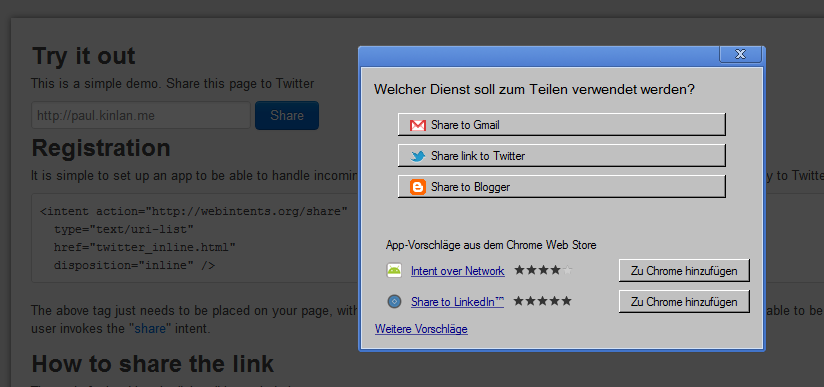

Web Intents
Bringing Web Apps Closer Together
Friedger Müffke
May 10, 2012
User activities
What the user intents to do on the web ...
|
|
|
.. is provided by several services.
NASCAR problem
Implementation of all available services is necessary by all web site provider.
Desired Solution
Web Intents is designed to address the problem of a Site wanting to do a certain Action with a Partner known to the User but not the Site.
Share intent
Single Button Solution

Current Status
- Support by Chrome group, Mozilla
- Available in Chrome Canary (18+) since Feb'2012
- First source code changes commited in WebKit 7th May 2012
- W3C standard in Editors Draft Status
Google: Greg Billock, James Hawkins, Paul Kinlan - more standards to come
Specification of Pick Intent
Demo
Life cycle of Intents
involves Service page, Client page, User AgentRegistration: Service page informs the User Agent
Invocation: Client page dispatches an Intent
Selection: User Agent decides which Service will handle the Intent
Delivery: Service receives Intent from User Agent
Response: Service passes data back through the User Agent to the Client page.
Code for Client page
var startActivity = window.navigator.startActivity
|| window.navigator.webkitStartActivity;
var imageUrl = document.getElementById("main-image").src;
navigator.startActivity(intent, myCallback);
var intent = new Intent("http://webintents.org/share",
"image/*", imageUrl);
var onSuccess = function(data) { /* woot */ };
var onError = function(data) { /* boooo */ };
startActivity.call(intent, onSuccess, onError);
Code for Server page
"intents":{
"http://webintents.org/share" : [{
"title" : "Best Image editing app",
"type" : ["image/*"],
"href" : "/index.html"
}]
}
document.addEventListener("load", function() {
if(!!window.intent) {
var data = window.intent.data;
// do something with the received Url
window.intent.postResult(data);
}
}, false);
Ongoing work
- More coding on Chrome and WebKit
- More discussion about uses cases - Feedback wanted!
- Technical refinement, e.g. constructor of Intent
- Explicit intents
- Default service/
Open Topics
- Inline services
- Service discovery for Home networks
More Topics
- Localization
- Relation to <link rel= and schema handler
- Native implementations
- Relation to Android intents
- Relation to Microsoft 8 Contracts
- Android Plugin for Web Intents in PhoneGap by Boris Smus
Friedger Müffke
 +Friedger Müffke gplus.to/friedger
+Friedger Müffke gplus.to/friedger
 @ fmdroid
@ fmdroid
Slides: friedger.github.com/slides/gtugs

This presentation by friedger is licensed under a Creative Commons Attribution-NonCommercial-ShareAlike 3.0 Unported License.
Presentation template is licensed under GPLv3 and was derived from other works indicated in the source code. Some content and media are copyrighted, and their sources are indicated.
Links
a href="http://www.w3.org/wiki/WebIntents">Home of Web Intents at W3C